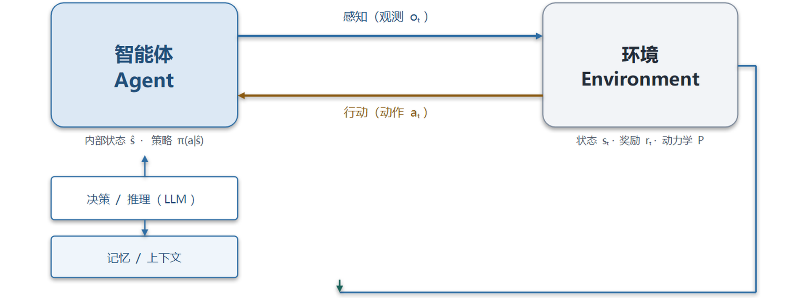
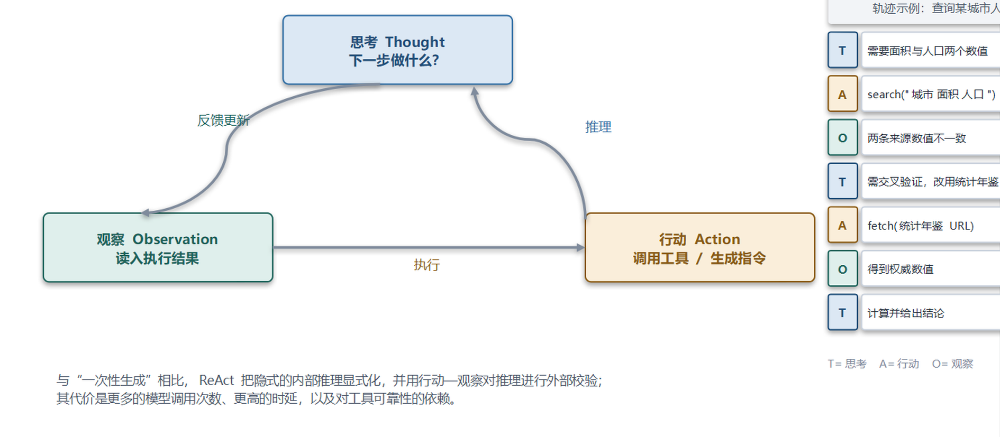

6.3 工作原理
6.3.1 感知—决策—行动闭环
智能体的运行可以抽象为一个循环。在时刻 t，智能体获得观测 oₜ，据此更新内部状态，依策略选择动作 aₜ，动作作用于环境，环境转移到新状态并给出奖励 rₜ，同时产生新的观测 oₜ₊₁。这个过程可以写成：
ŝₜ = Update(ŝₜ−₁, oₜ), aₜ ~ π(· | ŝₜ), (sₜ+₁, rₜ) ~ P(· | sₜ, aₜ) (6-1)
其中 ŝₜ 是智能体对环境状态的估计（顶部加帽表示”估计值”，因为真实状态 sₜ 往往不可直接观测），π 是策略，P 是环境的状态转移概率。式 (6-1) 是部分可观测马尔可夫决策过程（POMDP）的标准表述，也是理解一切智能体系统的共同语言。

图 6-1 智能体与环境的”感知—决策—行动”闭环
说明：每一轮循环包含观测更新、策略选择、动作执行与环境反馈四个环节；记忆模块跨轮次保存状态，使闭环具备连续性。
闭环的意义在于纠错。开环系统（如一次 LLM 调用）无法知道自己错在哪里，因为它的输出不再回到输入端。闭环系统则可以在每一轮用真实观测检验上一步的预期：如果预期”这个 API 会返回订单列表”，实际却返回 403，智能体就能发现前提不成立并调整。这种”预期—观测—修正”的机制，是所有可靠智能体的共同特征。
但在工程实现中，纯粹的闭环并不够。还需要三样东西把它变成可用的系统。
一是终止条件。 循环必须有明确的退出判据：任务完成、达到最大轮数、预算耗尽、或检测到无法恢复的错误。缺少终止条件的智能体会陷入”无限反思”——不断发现新问题、不断修改，却永远不收敛。实践中通常设置三重上限：轮数上限、token 预算上限、时间上限，任一触发即停止并输出当前最佳结果与未完成事项。
二是状态管理。 闭环的每一轮都会产生新的信息，这些信息必须有选择地保存。全部保存会撑爆上下文，全部丢弃会失去连续性。第 6.4.4 节讨论的记忆分层，正是对这一问题的回答。
三是异常处理。 环境不会总按预期响应：接口超时、返回格式变化、权限不足、数据缺失。智能体需要区分”可重试的瞬时错误”与”需要改变策略的持久错误”，前者重试，后者上报或改道。这一判断如果完全交给模型，容易反复重试同一个失败动作；因此工程上通常由框架层先做分类，再把分类结果告诉模型。
对语言模型驱动的智能体，闭环中的”感知”通常是用户的文本、语音输入，或来自其他系统 API 的结构化/非结构化数据；“决策”是需要规划的推理过程，现代智能体越来越多地依赖 LLM 进行复杂推理，例如思维链（Chain of Thought，CoT）或思维树（Tree of Thoughts，ToT）；“行动”则可以是生成文本回复、进行 API 调用、更新数据库，也可以是机器人在物理空间中的移动。闭环的形态相同，承载它的介质不同。
6.3.2 ReAct 轨迹：把推理与行动交织起来
闭环给出了抽象框架，但没有说明”决策”这一步具体怎么做。2022 年提出的 ReAct（Reasoning and Acting）给出了一个影响深远的答案：让模型在每一步同时生成”想法”和”动作”，用动作获取外部信息，用观测修正想法。
ReAct 的一轮包含三个交替出现的成分：思考（Thought）、行动（Action）、观察（Observation）。思考是模型对当前情形的判断与下一步计划；行动是对工具的调用；观察是工具返回的结果。三者串成一条轨迹：
|
Thought 1: 要回答“某城市人口密度”，需要人口与面积两个数值。 Action 1: search(“某城市 面积 人口”) Observation 1: 返回两条来源，人口数字不一致。 Thought 2: 数据冲突，需改用权威来源交叉验证。 Action 2: fetch(统计年鉴中的该城市条目) Observation 2: 得到面积与人口。 Thought 3: 两者相除得到密度，注意单位换算。 Action 3: calculate(人口 / 面积) Observation 3: 结果为 3921 人/平方公里。 Thought 4: 已获得答案，可以作答。 |

图 6-4 ReAct 式”思考—行动—观察”循环
说明：左侧为循环结构，右侧为一次真实轨迹的示例。思考产生行动，行动带回观测，观测改写下一步思考。
用概率的语言，ReAct 把一次联合生成拆成了交替的条件生成。设轨迹由思考、行动、观察序列组成，则其似然可以写成：
p(τ) = ∏ₖ=₁K p(aₖ | c, hₖ−₁) · p(oₖ | aₖ) · p(hₖ | c, hₖ−₁, aₖ, oₖ) (6-2)
其中 c 是任务上下文，h_{k−1} 是此前的思考与观测历史，p(o_k | a_k) 由环境（工具）决定而非模型决定。式 (6-2) 揭示了一个重要事实：轨迹的质量不只取决于模型，也取决于环境返回的观测质量。 工具返回模糊、错误或过长的信息，会直接劣化后续推理。这解释了为什么工具设计的”错误信息可读性”如此重要。
ReAct 相对于纯推理（只有思维链）与纯行动（只有工具调用）的优势，可以用一句话概括：纯推理容易幻觉，纯行动容易盲目。 只有推理，模型会在没有外部依据的情况下自信地编造；只有行动，模型会在没有全局计划的情况下机械地试错。交织二者，才能既保持方向感，又保持与现实的接触。
ReAct 的代价也很明确。第一，调用次数增加：每轮至少一次模型调用，长任务可能几十轮，时延与成本线性上升。第二，轨迹会迅速膨胀：每轮的思考与观测都要写回上下文，很快触及窗口上限。第三，错误会沿轨迹传播：第 3 步的一个错误观测，可能导致第 4 至 10 步全部偏离。针对这三点，后续研究分别提出了动作缓存与并行化、轨迹压缩与分层摘要、以及基于反思的回溯机制。
值得注意的是，ReAct 并非唯一形态。Plan-and-Execute 先把计划整体生成再逐步执行，适合步骤清晰的任務；Reflexion 在执行失败后生成”教训”并写入记忆，适合可重复尝试的任务；Tree-of-Thoughts 在思考层面做树搜索，适合需要探索的解谜类任务。它们的共同点都是”把隐式的内部推理外化为可检查的中间结构”，差别在于外化的粒度与时机。
6.3.3 规划、执行与反思：LLM 与框架的分工
一个常见的误解是：既然模型足够强，把所有事情交给它就行。工程实践反复证明这一想法行不通。原因在于，语言模型擅长的是语义层面的判断，不擅长的是状态层面的保证。前者如”这句话是否表达了退款意图”，后者如”这个订单是否已经支付过”。把后者交给模型，等于用概率系统承担确定性职责。
因此，成熟的智能体系统会在 LLM 与框架之间划一条分工线：
· LLM 负责：理解意图、抽取约束、生成计划草案、选择工具、解释结果、在异常时提出假设、撰写面向用户的说明。
· 框架负责：维护状态机、校验参数、执行重试与超时、管理上下文预算、记录轨迹、实施权限与配额、判定终止条件。
这条分工线的判据是可验证性：凡是能用确定性代码验证的，就不该交给模型判断。例如，“工具返回的 JSON 是否符合 schema”可以用代码校验，就不应让模型”看看对不对”；“这次调用是否超过了用户设定的预算”可以精确计算，就不应让模型估计。
分工确定之后，一个任务的执行通常经历三个阶段。
规划阶段。 模型根据目标与约束生成步骤列表，每一步标注所需的工具、输入与预期输出。计划不必完美，但必须可执行——每一步都要能映射到具体的工具调用。差的计划往往不是”想错了”，而是”想得太粗”：只说”查询航班”，没说查哪天的、从哪到哪、接受几次中转。
执行阶段。 框架逐步执行计划，把每步的观测写回上下文，并检查是否偏离预期。偏离超过阈值时触发重规划。此处有一个重要的工程权衡：重规划的粒度。整盘重来成本高但一致性好，局部调整成本低但可能破坏全局约束。常见做法是”局部优先、全局兜底”：先尝试替换失败的那一步，若连续两次失败再整体重规划。
反思阶段。 任务结束后（无论成功或失败），让模型审视轨迹，回答三个问题：哪一步是关键？错在哪里？下次如何避免？反思的产物不是一段散文，而是结构化的条目，写入长期记忆，供后续同类任务检索。Reflexion 的实验表明，这种”语言化的经验”能在后续尝试中显著提升成功率，其效果类似于人类从失败中总结出的检查清单。
反思也有风险。如果模型对失败的归因本身是错的，写入记忆的”教训”会污染后续决策，形成”越反思越错”的负反馈。因此，反思条目应当与具体的失败证据绑定（哪一步、什么报错、期望与实际分别是什么），并在后续使用时允许被新证据推翻，而不是作为不可质疑的教条。
6.3.4 终止、校验与人机协同
智能体的可靠性，很大程度上取决于它”知不知道该停”。一个不会停的智能体比一个会犯错的智能体更危险，因为它会持续消耗资源、持续产生副作用。
终止条件应当在设计阶段就明确，而不是留给模型临场判断。常见的四类判据是：目标达成（验收标准全部满足）、预算耗尽（轮数、token、金额、时间任一超限）、不可恢复错误（权限缺失、依赖服务下线）、需要人类决策（涉及不可逆操作或价值判断）。第四类最容易被忽略：很多系统在遇到”要不要给用户退款”这类问题时，会选择继续尝试各种办法，而不是停下来问人。
校验是终止的前置条件。没有校验，“目标达成”只是模型的自述。校验分三层：格式校验（输出是否符合 schema）、事实校验（关键数字是否与工具返回一致）、逻辑校验（结论是否与前提矛盾）。三层校验中，格式校验最容易自动化，事实校验次之，逻辑校验最难，往往需要引入独立的评审模型或规则引擎。
人机协同的设计，核心是把人的注意力放在最需要的地方。人的注意力是稀缺资源，如果系统事无巨细都请求确认，用户会迅速失去耐心并习惯性点击”同意”，反而降低了安全性。合理的做法是按风险分级：低风险操作自动执行并事后告知，中风险操作执行前预览，高风险操作逐项确认并要求说明理由。这一分级与第 6.2.4 节讨论的”可逆区/不可逆区”是同一思想的不同表述。